INTRODUCTION - PANELS AND FRAME
- Path
- Descriptions > 72 PANELS AND FRAME > INTRODUCTION - PANELS AND FRAME
- Kind
- system description
- Applies to
- all engines; all production periods
- Interactive page
- https://sloeber94.github.io/elrnDB-fPnd/en/#/2753497
Applies to: all engines; all production periods
General remarks
The topics are covered with particular attention to the new technical features required for passing the various tests introduced by new legislation. The descriptions and operating information provided are limited to a discussion of principles, rules and minimum precautions.
For information on repair methods and vehicle specifications, see the specific sections on repair procedures.
Aerodynamics
The styling of the new car is designed to reflect great personality and originality and improves on the attributes of roominess, practicality and sturdiness achieved by previous models.
The front, sides, rear and underbody were developed with particular attention to aerodynamics and allow outstanding drag coefficient values. The following values are an example:
Version with basic specification
drag coefficient Cd - 0.33
drag coefficient by area Cd x A = 0.6738
These values are the result of road testing and measurements carried out in a wind tunnel.
These results contribute to the noiselessness of the vehicle and significantly reduce wind noise. They also allow fuel saving.
Safety
The main aim of car manufacturers is definitely the total safety of the driver and passengers.
To adapt the vehicle to highly demanding European and international market regulations, the new vehicle was designed with great attention to detail in order to achieve an optimum response in all situations.
Specifications
The vehicle's great torsional and flexural rigidity ensure good properties of passive strength and also offer a number of benefits:
- low noise due to fewer vibrations;
- no creaking from the trim;
- better handling by maintaining the correct suspension angles and thus an absolutely controlled drive for a sensation of stability and comfort in general,
- greater ability to withstand breakages caused by using the vehicle over particularly uneven road surfaces;
- sensation of vehicle compactiness;
- to ensure long-term overall vehicle quality.
Torsional rigidity
Diagram showing deformation due to torsion
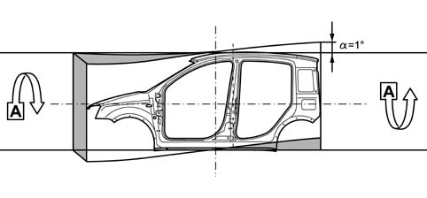
Torsional rigidity
Torsional rigidity values
Body with bonded windscreen: 60100 daNm/rad
Flexural rigidity
Diagram showing deformation due to bending
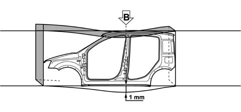
Flexural rigidity
Flexural rigidity values
Body with bonded windscreen: 860 daN/mm
Preventive safety
This concerns all factors that determine comfortable driving conditions and prevent situations that could distract the driver's attention:
- very stiff body for greater driving safety;
- optimised engine mountings (barycentric) to minimise vibration and noise transmission;
- climate control system (where fitted) with activated charcoal pollen filter with balanced diffusion throughout the passenger compartment. Well-arranged ventilation outlets allow excellent air exchange and improved transpiration and thermal comfort;
- an extensive glazed area allows optimum visibility;
- the tail-lights are shaped to optimise the indicator light functions;
- the arrangement of the pedals, steering wheel (height-adjustable as an option), main controls and warning lights has been carefully considered to achieve a good valance between driving position and ability to reach the controls;
- the height-adjustable driver's seat (where fitted) allows the best possible driving position to be achieved;
- generous interior dimensions allow the vehicle occupants the necessary level of comfort;
- abundant use of sound-absorbent materials and the adoption of specific vibration-proof fasteners to reduce mechanical noise and achieve a noiseless, welcoming environment;
- interior trim that meets the toughest flame-retardant standards.
Active safety
This concerns features of the vehicle and specific components that help the driver overcome potential dangers while driving.
The following features contribute to the vehicle's active safety:
outstanding stability during driving and in terms of the vehicle's dynamic performance;
excellent braking system;
good pick-up;
The vehicle offers features that are mutually complementary:
- the front suspension ensures great control of the vehicle during standard or sporty driving. It allows great driving precision and vehicle control over wet and slippery surfaces, a prompt, accurate response and an ability to absorb obstacles and roughness present on the road surface;
- a torsion beam rear suspension designed to offer improved handling performance, the torsion beam assures the susension an ideal level of torsional rigidity for an excellent balance between vehicle front and rear.
- smart bushes attaching the rear axle to the body for limited self-adjustment to steering modulated by the stiffness of the bushes
- new design electric steering system (where fitted) designed for a crisp, prompt response in all situations;
- braking system big enough to guarantee powerful, safe braking without fade, consisting of two independent cross-over circuits with an ABS/EBD system (the most advanced brake control system currently available) with four channels and four active sensors to reduce activation times, equipped with an EBD (Electronic Brake Distribution) device: that does away with the need for a load proportioning valve;
- VDC integrated traction control system with ESP/ASR/HHC functions (where fitted).
Passive safety
Because in statistical terms head-on impacts account for 60% of accidents, side impacts account for 30% and the remaining 10% are accounted for by shunts, fires and rolls, the vehicle structure has been designed and developed to crumple in controlled manner in the case of impact and to absorb the energy developed without affecting the living areas of the passenger compartment.
To safeguard the vehicle occupants, the seat anchorage points and seat belt attachment points (a three-part belt is also available on the central rear seat) have been reinforced.
Front seat occupants are protected, as standard, by a system that includes a driver's airbag and pyrotechnic seat belt pretensioners (electronically controlled). As an option, the safety system may be complemented by a passenger airbag (that can be deactivated manually by inserting the ignition key in a barrel on the right facia head), sidebags for the driver and front passenger and a head bag that extends under the moulded roof along the right and left sides to protect the heads of vehicle occupants from side impact.
Particular attention was devoted to structural design to minimise damage and repair costs arising as a result of accidents
General specifications
The body is made up of differential crumple zones and is fitted with reinforcements to strengthen the survival cell. These enable the car to withstand head-on impact by ensuring the passenger compartment remains intact to offer the greatest protection to its occupants and minimise the effects of impact.
The main actions taken on the body to achieve the required aims are as follows:
- front structure with differential crumple zones designed to crumple at pre-established points to absorb and distribute the impact force over the structure due to a front sacrificial beam bolted to a crash box that can absorb even off-centre impact.
- reinforcements on the side pillars connected to a high-strength tubular steel structure under the facia that ensures a sturdy connection between the pillars and also with the floor, to which it is connected by a cradle anchored to the tunnel. This configuration contributes significantly to ensuring the non-deformability of the entire front area of the passenger compartment during head-on and side impacts. Because it also acts as a support structure for the steering column, it prevents the steering wheel moving back and upwards during all types of frontal impact.
- reinforcements under the floorpan that increase the solidity and stiffness of the floor to limit deformation as much as possible;
- adoption of bonnet retaining hooks on the bonnet hinges and a collapsible telescopic steering column.
Impact forces are further absorbed and distributed by the engine attachments that discharge the forces to the front reinforcement and prevent excessive load on the passenger compartment.
These features of the structure, together with the fastening systems and the interior energy absorbing parts allow the vehicle to achieve a high level of safety and pass all the tests imposed by standards.
Composition
.
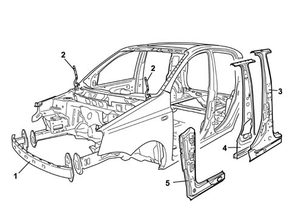
1 Front sacrificial crossmember
2 Bonnet hinge reinforcements
3 Outer element of central pillar reinforcements
4 Inner element of central pillar reinforcements
5 Reinforcements on side pillars
General specifications
The body complies with all the most recent European standards on side impact and is able to assure a high level of occupant safety by crumpling in a controlled fashion to prevent damage to the survival cell.
The above has been achieved by:
- reinforcing the underdoor reails between the front pillars and the central pillars;
- reinforcing the central and rear pillars at the rail attachment points, at the seat belt anchorage points and in the lock striker areas;
- inserting a box section reinforcement beam between the underdoor rails.
the doors described below contribute significantly to the vehicle's ability to withstand side impact.
Composition
.
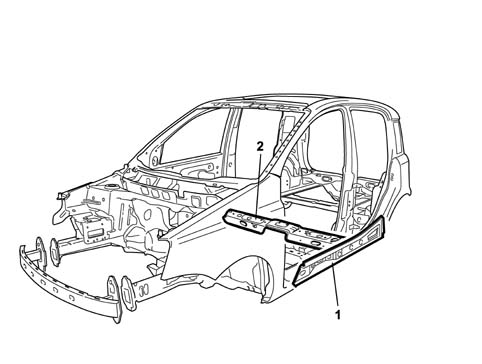
1 Underdoor rail reinforcement
2 Reinforcement beam between underdoor rails
General specifications
The door structure is of fundamental importance to the safety of passengers in the case of side impact and the door panel geometry and stiffness is therefore designed to maintain survival spaces at the sides and minimise possible injury to passengers.
The above has been achieved by:
- fitting tubular side impact bars, using reinforcements at the waistline and along the pillars to make up an ideal high-strength door ring;
- fitting high-strength locks and strikers;
- fitting energy-absorbing interior door trim without sharp corners designed to ensure minimum impact against the body in the event of an accident.
Composition
.
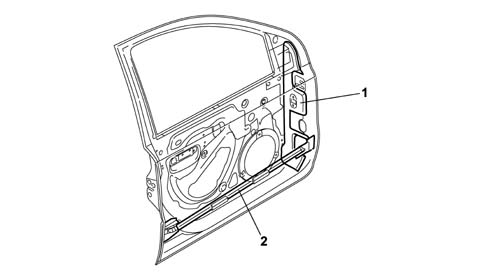
1 Pillar reinforcement
2 Tubular side-impact bar
General specifications
The specific structure of the ceiling makes the passenger compartment more rigid and contributes to passenger safety in the event of side impact or roll-over which, despite being much less likely to occur than the other types of impact, is one of the most dangerous accidents.
The following features increase the solidity of the passenger compartment structure:
- high-resistance steel box section crossmembers connecting the side panels at the upper part of the windscreen, tailgate and in a central position between the upper ends of the pillars;
- structural adhesive sections along the edges of the upper box section beams of the windscreen compartment and tail-gate compartment.
These features allow outstanding levels of strength to be achieved during the static and dynamic crushing and rollover tests required by European standards.
Composition
.
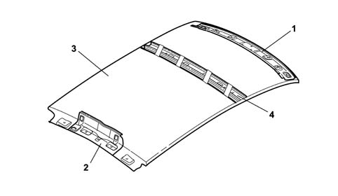
1 Upper windscreen box section beam
2 Upper tailgate box section beam
3 Roof panel
4 Box section beam connecting central pillars
General specifications
The vehicle's resistance to rear impact is very high and passes the tests specified by the toughest standards in force in Europe.
This performance is ensured by:
- a reinforced rear box section beam;
- reinforcements on the attachments between the rear beam and pillars;
- tailgate with reinforced ribbing;
- reinforced side and rear tailgate ribbing.
Composition
.
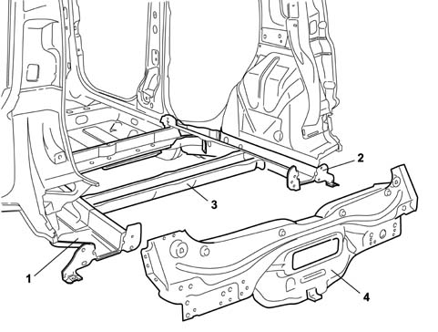
1 Left rear rail
2 Right rear rail
3 Rail connection beam
4 Rear beam
WINDSCREEN AND WINDOWS
The fixed windows further contribute to safety. The windscreen is bonded to the body and this increases the structural rigidity of the vehicle.
To increase the vehicle safety level, the windscreen is in laminated glass. This solution prevents the glass from shattering if struck by stones or gravel to assure visibility at all times and above all to offer a high level of protection if struck with the head.
The windscreen is bonded to the body. The seal flush with the body helps reduce wind noise due to the vehicle's progress.
Safety against fires
This is achieved by a FPS (Fire Prevention System) consisting of:
- fireproof interiors, all trim meets the toughest US flame-retardant standards and will not catch fire if it accidentally touches a heat source (e.g. a cigarette) and limits the flame propagation rate;
- inertia switch to cut off the fuel pump;
- antimisfiring shields (overheating of the catalytic converter, for petrol versions) that insulate the catalytic converter and protect the brake and fuel pipes;
- electrical equipment protected by maxifuses that cut off the fuel flow in the case of short-circuit or overheating that could occur in the event of fire;
- battery secured in the event of impact or roll-over;
- cut-off valve to prevent fuel leaks if the vehicle rolls over;
- plastic fuel tank with high mechanical strength and fire-resistance, secured firmly to the body in a shielded position;
- arrangement of the electrical equipment, fuel pipes and brakes designed to minimise the possible risk of fire in the event of accidents or failure.
GENERAL SPECIFICATIONS
To meet EEC standards, the vehicle's exterior noise levels must be lower than 74 decibels.
Driving comfort and living conditions inside the passenger compartment have been improved by:
optimising the body through a thorough examination of all parts subject to noise, which have been made stiffer and fastened more securely;
choosing contact materials with great care;
by improving the insulation against noise transmitted from the road surface, from mechanical parts and from the suspension;
by taking great care over parts assembly, aerodynamics and all parts with shapes that affect acoustic comfort, such as door handles, door mirrors, bumpers and other outlines;
by fitting new generation engines with high-tech features designed to improve acoustic/vibrational factors;
by fitting a barycentric engine mounting.
Another area of improvement has been the passenger compartment insulation. The following action has been taken:
highly efficient sound-absorbent materials with optmum thickness and layout on the vehicle;
fitting of a sound-absorbent undershield in the lower part of the engine compartment for acoustic insulation
elimination of acoustic holes (areas where sound can pass between the engine compartment and passenger compartment) by fitting double-lipped seals, thicker rubber plugs,
by fitting the various sound-insulation parts together more tightly to avoid uncovered areas;
extensive use of sound-absorbent seals;
sound-proofed coating of panels with heat-bonded materials applied before painting;
lining of the bulkhead and front steps to remove the sensation of the engine's presence;
application of heat-expanding materials inside the box sections prior to painting to reduce noise transmission. During body cataphoresis process, the volume of these materials expands ten times to fill the box section effectively.
lining the boot compartment appropriately to reduce rolling noise;
carefully examining the fitting and size of parts liable to squeak such as the facia, heater and seats: the anchorage and fastening points have been reinforced.
Diagram showing application of heat bonded materials to the vehicle
.
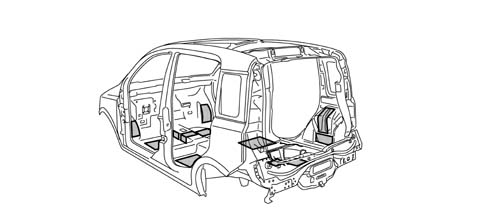
General remarks
The vehicle body is designed to withstand for many years (8 years without perforating corrosion, 10 years without structural weakening) any environmental attack to the interior, not visible but potential subject to corrosion, and exterior, particularly subject to damage that may affect the exerior appearance of the vehicle.
This result has been achieved by examining the structure of the interior panels to minimise their exposure to corrosive infiltrations, making extensive use of galvanised panels and using a host of protective treatments and seals on all interior and exterior panel surfaces to prevent leaks and fulfil an essential sound-proofing function.
Galvanising
The panels may be zinc coated by means of two different technological processes:
galvanic deposition: the panel is painted with, if only one surface is treated (SINGLE GALVANISED PANEL) or immersed in, if both surfaces are treated (DOUBLE GALVANISED PANEL) a solution of zinc salts from which a layer of pure zinc with a high level of surface finish is deposited;
hot deposition: molten zinc is deposited on the panel due to the effect of heat. During this process, which is used mainly for structural body parts, zinc thickness up to 20 microns can be achieved. This process is used for parts most exposed to corrosion while eight microns are normally used for other zinc-coated panels.
The zinc layer acts as an active chemical protection for the steel, known as a sacrificial layer, that combines with the subsequent protective systems to guarantee outstanding long-term corrosion-proofing.
85% of the body by weight is made up of zinc-coated panels, of which 73% by weight double galvanised and 27% by weight in single galavanised steel.
All parts making up the chassi are 100% galvanised with some parts, e.g. the suspension attachments and seat belt reinforcements, made out of panels with a high thickness of zinc.
The outer and mobile parts of the body (linings and reinforcements) are made totally out of double galvanised steel with the exception of the ceiling, which is made out of ungalvanised steel because it is hardly exposed to corrosion.
The use of galvanised steel for exterior panels minimises the risk of cosmetic corrosion during the first three years of the vehicle's life.
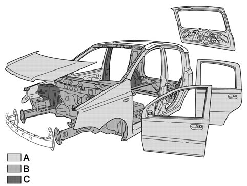
Galvanising
A 8 micron double galvanised panels
B Single galvanised panels
C 20 micron double galvanised panels
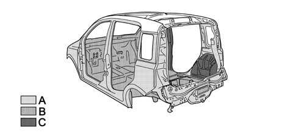
Galvanising
A 8 micron double galvanised panels
B Single galvanised panels
C 20 micron double galvanised panels
Specifications
The vehicle coloru range includes: non-metallic colours (two-coat), metallic colours.
The vehicle colour type and specifications are shown on the identification plate that shows the following information.
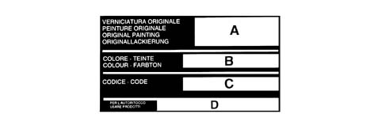
Specifications
A, paint product supplier;
B, enamel colour and type
C, code;
D. type of product to be used for touching up and painting in the event of service operations
Composition
The aim of painting the bodyshell is to:
protect the sheet metal against corrosion due to exposure to environmental effects;
achieve high levels of gloss and colour richness and maintain them in time.
Before painting, the body undergoes a bonderisation process when the body is cleaned of grease and surface rust by rinsing in a series of basic and then acid baths to prepare it for the subsequent painting stage.
Painting is a fundamental treatment for the protection of structural parts. The process allows the paint to coat areas of the body that would otherwise be in accessible. The process is carried out by immersion in electrically insulated tanks containing an aqueous solution of paint product. This solution is negatively charged while the body is positively charged. During immersion, a layer of paint is deposited (25 microns on horizontal parts and 20 microns on vertical parts) that can be adjusted by altering the bath voltage, the bath temperature and the length of time the body remains in the solution.
The body then undergoes a process of stoving in an oven at 160° for 18 minutes.
Heat bonded materials are then applied to the prepared body and then all the joints between the body panels are sealed to prevent corrosive agents leaking through. An abrasion-resistant coating is then applied to all areas exposed to gravel from the road. This highly flexible protective coating bonds tightly to the surface and also contributes significantly to acoustic damping. The body is now prepared by adding a primer coat (50 microns thick) before undergoing a further stoving cycle in the oven.
After the final painting cycle (followed by stoving in the oven), the corrosion-proofing treatments are complemented by the application of wax oil inside the box section parts.
MAIN SPECIFICATIONS
According to EEC ELV (End of Life Vehicles) directives, all metallic and non-metallic parts must be recovered from the vehicle and reused, 80% to produce new material and 5% for recovered energy. Nowadays, some 75% of a vehicle's weight is made up of metal that can easily be recovered by melting when different metals can be separated by heating to their different melting points. All the remaining part of the vehicle, amounting to 25% by weight, must be recovered before this stage. The solution to the problem of recycling plastics is resolved at the design stage: the possibility of re-using the material on future components must be assessed at this time:
The aims to be considered at the design stage include:
- ease of component disassembly;
- choice of noble materials in the recyclable polymer chain (giving priority to parts made up of a single family, e.g. PP).
Recycling does not allow the production of a part that is the same as the original part because the material may not be able to guarantee the necessary levels of reliability or it may not be financially viable.
Plastics may be recycled in a cascade pattern. For example:
- insulating material for the building industry is obtained from seat padding;
- the material used to line the wheel arches is obtained from the bumpers and then goes on to produce sound-proofing elements. In the end, it becomes a fuel for energy production.
This model has been designed to ensure that all its plastic and elastomer parts (rubbers) weighing over 50 grams are marked with coded symbols to identify the material during recycling and also to ensure that all its components are recyclable.
The recyling process therefore afffects three successive vehicle generations to help save raw materials.
Other materal reuse processes are also being examined outside the motor industry, following the lead taken by the F.A.Re (Fiat Auto Recycling) partnership in the Eighties and Nineties.
Another important point to note concerns the use of heavy metals in the motor industry. The metals in question are hexavalent chrome (Cr6), Mercury (Hg), Cadmium (Cd) and lead (Pb). These are banned (Cr6) or permitted only in tiny amounts when their use must be indicated by labelling or by including information in the documents supplied with the vehicle.
The tables in the chapter "GENERAL INFORMATION AND TECHNICAL DATA - OPERATING DATA" show symbols for and descriptions of recyclable materials present on the vehicle. This is to ensure that the best available products are used to wash the interior, paint plastic parts and carry out repairs, bonding etc. The aim is to avoid the possibility of damage by using incompatible products. Labelling also allows organic materials to be selected on the basis of their chemical composition. During service, it is also advisable to separate materials on the basis of their composition to ensure that they can be recycled more easily.
Diagram showing the reuse of recycled materials
.
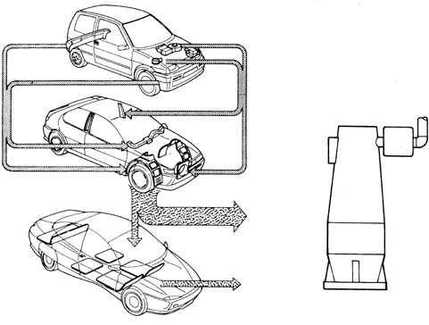
Labelling of part of the recyclable material
.
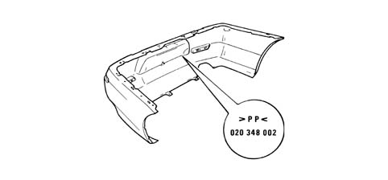
Vehicle parts involved in the recycling process.
.
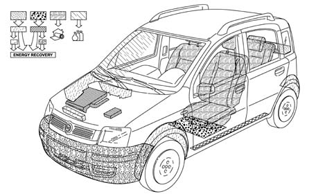
DIMENSIONS FOR THE ADJUSTMENT OF MOBILE PARTS
To facilitate and verify mobile part disassembly operations, the existing gaps are shown (in millimetres) to allow appropriate adjustment.
The adjustment procedure is described in the sections describing mobile part removal and refitting procedures.
View of the vehicle (front three quarters) with the position of points for measuring the gaps between mobile parts.
.
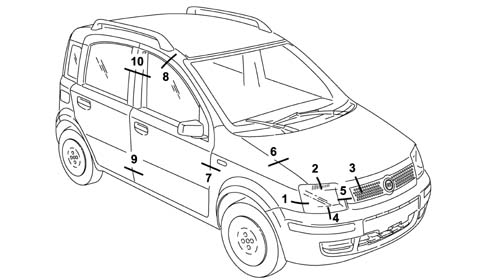
View of the vehicle (front three quarters) with the position of points for measuring the gaps between mobile parts.
.
Points for measuring the gaps between parts 1 to 6.
.
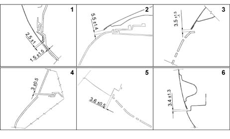
Points for measuring the gaps between parts 7 to 10.
.
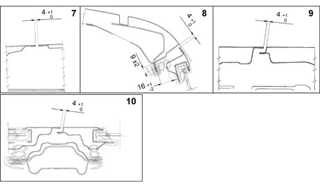
View of the vehicle (rear three quarters) with the position of points for measuring the gaps between mobile parts.
.
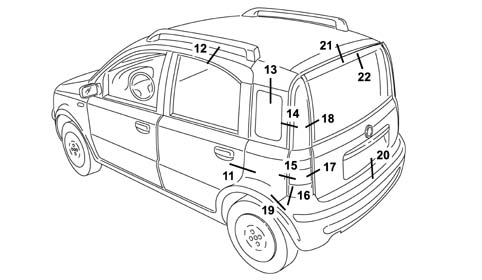
Points for measuring the gaps between parts 11 to 16.
.
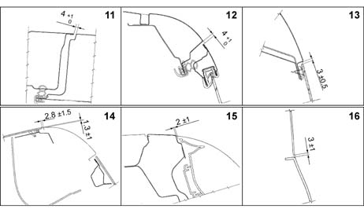
Points for measuring the gaps between parts 17 to 22.
.
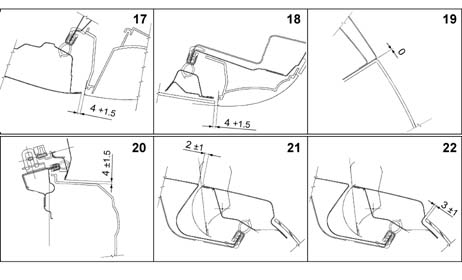
View of the vehicle showing the sealant application areas.
.
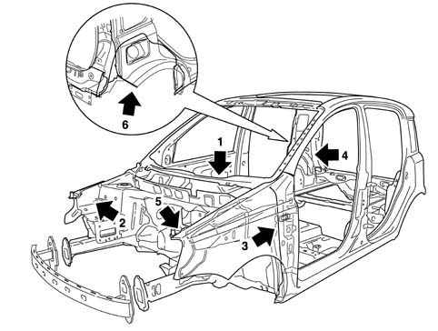
Detail showing sealant application in areas 1 to 4.
.
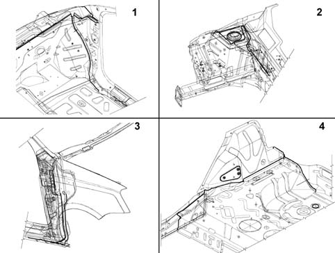
Detail showing sealant application in areas 5 and 6.
.
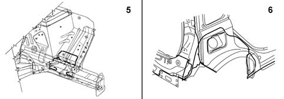
DIAGRAM FOR CHECKING THE UNDERBODY
This chapter shows the specified vehicle dimensions to ensure the best results are achieved when carrying out repair operations.
The comparative dimensions, expressed in millimtres, may be subject to differences (about 2 mm). Repairers must use their experience to decide whether this is due to impact damage or manufacturing tolerances.
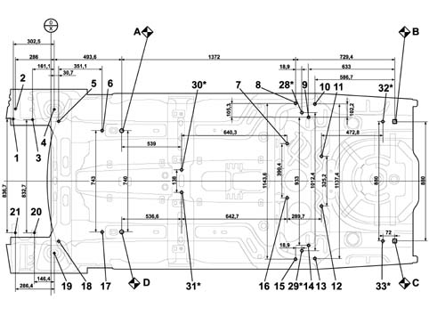
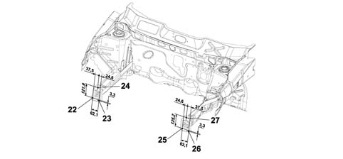
Reference dimension for point A (mm) | Reference dimension for point C (mm) | ||||||
|---|---|---|---|---|---|---|---|
Ref. | Description | X axis | Y axis | Z axis | X axis | Y axis | Z axis |
A | Front body primary reference RH | - | - | - | - 2005,0 | 70,0 | -193,4 |
B | Rear body primary reference RH | 2005,0 | 70 | 193,4 | 0,0 | 880,0 | 0,0 |
C | Rear body primary reference LH | 2005,0 | -810,0 | 193,4 | - | - | - |
D | Front body primary reference LH | 0,0 | -740,0 | 0,0 | - 2005,0 | 70,0 | -193,4 |
1 | Suspension block rh inside front attachment | -796,1 | 85,5 | 420,1 | - 2801,1 | 895,5 | 226,7 |
2 | Suspension block rh outside front attachment | -779,6 | 159,2 | 420,1 | -2784,6 | 969,2 | 226,7 |
3 | Suspension block rh inside rear attachment | -654,7 | 81,5 | 420,1 | -2659,7 | 891,5 | 226,7 |
4 | RH front shock absorber upper attachment on dome | -495,5 | 156,9 | 602,8 | -2499,5 | 966,9 | 409,4 |
5 | RH front attachment for front suspension beam | -462,9 | 71,1 | 121,2 | -2467,9 | 881,1 | -72,2 |
6 | Front suspension beam RH rear attachment | -142,6 | 1,5 | 0,0 | 2147,6 | 811,5 | 193,4 |
7 | RH front attachment for fuel tank fastening | 1179,3 | -95,4 | 145,6 | -825,7 | 714,6 | -47,8 |
8 | RH front attachment for rear suspension | 1275,6 | 201,8 | 115,3 | -729,4 | 1011,8 | -78,1 |
9 | RH inner rear attachment for rear suspension | 1372,0 | 96,4 | 115,3 | -633,0 | 906,4 | -78,1 |
10 | RH outer rear attachment for rear suspension | 1418,3 | 198,7 | 115,3 | -586,7 | 1008,7 | -78,1 |
11 | RH rear attachment for fuel tank fastening | 1460,2 | -211,4 | 188,2 | -544,8 | 598,6 | -5,2 |
12 | LH rear attachment for fuel tank fastening | 1469,0 | -536,6 | 188,2 | -536,0 | 273,4 | -5,2 |
13 | LH outer rear attachment for rear suspension | 1418,3 | -938,7 | 115,3 | -586,7 | -128,7 | -78,1 |
14 | LH inner rear attachment for rear suspension | 1372,0 | -836,4 | 115,3 | -633,0 | -26,4 | -78,1 |
15 | LH front attachment for rear suspension | 1275,6 | -941,8 | 115,3 | -729,4 | -131,8 | -78,1 |
16 | LH front attachment for fuel tank fastening | 1179,3 | -485,8 | 145,6 | -825,7 | 324,2 | -47,8 |
17 | Front suspension beam LH rear attachment | -142,6 | -741,5 | 0,0 | -2147,6 | 68,5 | -193,4 |
18 | LH front attachment for front suspension beam | -462,9 | -811,1 | 121,2 | -2467,9 | -1,1 | -72,2 |
19 | LH front shock absorber upper attachment on dome | -494,5 | -897,0 | 602,8 | -2499,5 | -87,0 | 409,4 |
20 | Power unit mounting block LH rear attachment | -640,1 | -751,2 | 327,6 | -2645,1 | 58,8 | 134,2 |
21 | Power unit mounting block LH rear attachment | -780,1 | -751,2 | 327,6 | -2785,1 | 58,8 | 134,2 |
22 | Crash box beam RH outer lower attachment | -1022,0 | 108,4 | 208,0 | -3027,0 | 918,4 | 14,6 |
23 | Crash box beam RH inner lower attachment | -1022,0 | 46,3 | 204,7 | -3027,0 | 856,3 | 11,3 |
24 | Crash box beam RH upper attachment | -1022,0 | 70,9 | 329,9 | -3027,0 | 880,9 | 136,5 |
25 | Crash box beam LH inner lower attachment | -1022,0 | -786,3 | 204,7 | -3027,0 | 23,7 | 11,3 |
26 | Crash box beam LH outer lower attachment | -1022,0 | -848,4 | 208,0 | -3027,0 | -38,4 | 14,6 |
27 | Crash box beam LH upper attachment | -1022,0 | -810,9 | 329,9 | -3027,0 | -1 | 136,5 |
28* | RH inner front attachment for rear suspension | 1294,5 | 136,0 | 115,3 | -710,5 | 946,0 | -78,1 |
29* | LH inner front attachment for rear suspension | 1294,5 | -876,4 | 115,3 | -710,5 | -66,4 | -78,1 |
30* | Propeller shaft mount RH central attachment | 539,0 | -286,5 | 9,6 | -1466 | 523,5 | -140,7 |
31* | Propeller shaft mount LH central attachment | 536,6 | -424,5 | 9,6 | -1468,4 | 385,5 | -140,7 |
32* | RH rear attachment for rear suspension rail | 1933,0 | 70,0 | 150,3 | -72,0 | 880,0 | 0 |
33* | LH rear attachment for rear suspension rail | 1933,0 | -810,0 | 150,3 | -72,0 | 0 | 0 |
The points indicated by (*) are specific to the 4x4 version
A, RH front body primary reference
B1, B2, B3 Right side engine mount attachment
C1, C2, Left side engine mount attachment
D, Front suspension front attachment
E, Front suspension attachment pillar cap fastening
F, Front suspension rear attachment
G, Rear suspension front attachment
H, Rear suspension rear attachment
I, Rear suspension attachment
L, RH rear body primary reference
M, LH rear body primary reference
N, LH front body primary reference
DIAGONALS
Points A/L/M/N are also used as references for checking diagonal dimensions, e.g. dimension A/M must be equal to L/N or viceversa.